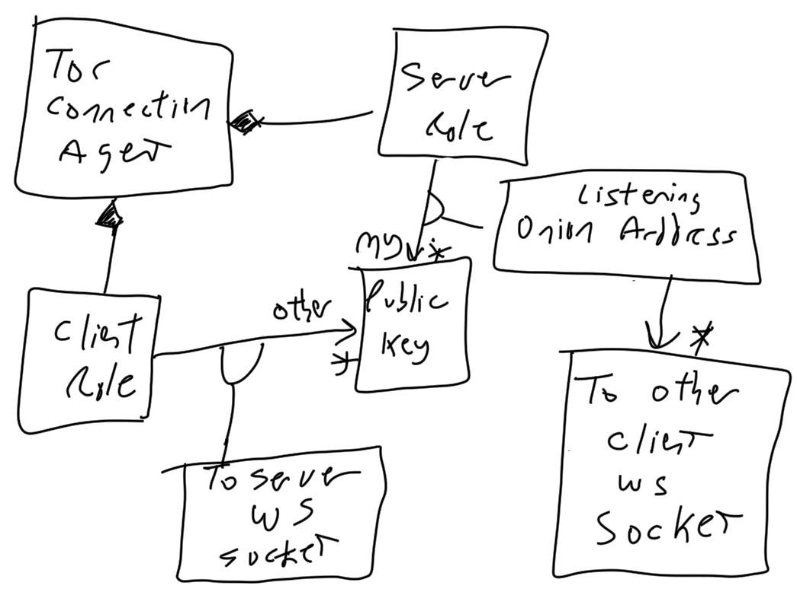
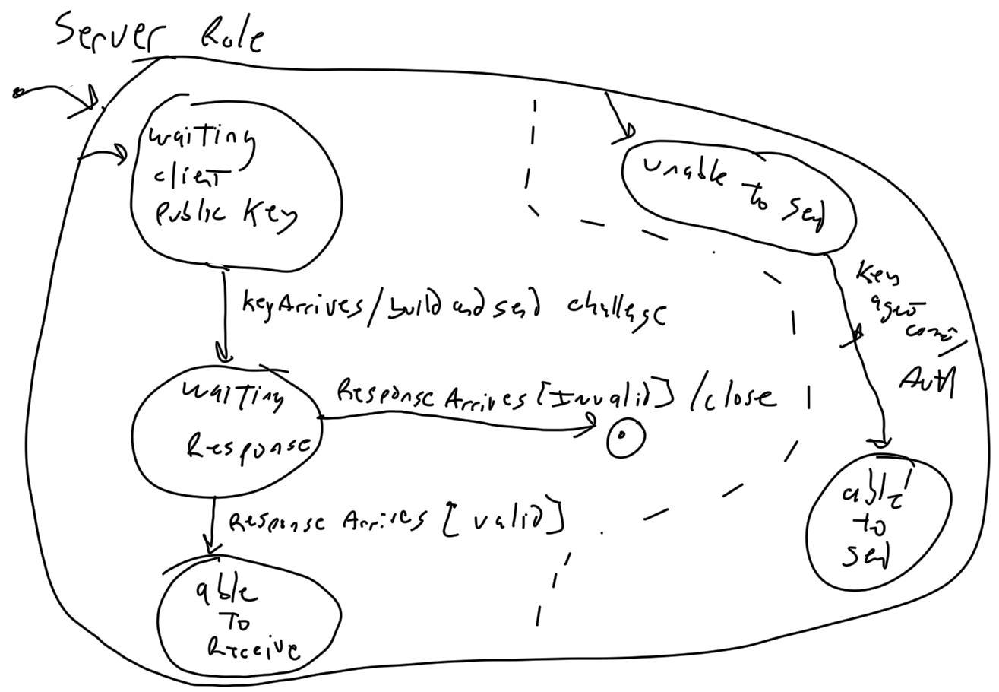

Chat provides secure and anonymous communications between a group of invited participants.
The following characteristics are are present:
Summarized: Islands Chat enables people who hold private keys to interact with other people who hold private keys when exposing only their public keys.
The chat will be ordered only to the extent that messages sent from a sender will arrive ordered by that sender (including requesting of any lost messages and re-ordering of messages out of order).
In particular, there is no absolute ordering of the chat. This means that the race condition where Particpant 1 and Participant 2 both send at the same time is not resolved. Each participant will see a different ordering of messages and will store a different ordering of messages. But the promise that each participant's messages will be ordered is not broken. All complaints that "He saw the other person's comments arrive before mine and I sent mine first!" will be considered a mental defect by the complainer.
| Term | Definition |
|---|---|
| Participant |
Participants are the entities (normally people but may be a program that have an asymmetric key pair and are enrolled in the chat topic. |
| Asymmetric key pair |
An asymmetric key pair is a pair of keys, one public and one secret (note, the secret key is normally called the private key but the term secret was chosen so that we can easily refer to a key within a pair as kp(p) for public and kp(s) for secret). The key pair allows us to cryptographically make certain claims, in particular:
These claims enable using a secret key to sign a hash. There is never any reason to hide or restrict access to a public key. The entire point of asymmetric keys is that the only secret is the secret key. At no time will or should anything request a secret key as part of any exchange in the system. These keys are slow to encrypt and decrypt with and take a lot of computing time to create. They are used almost exclusively for signing (encrypting a hash) or protecting symmetric keys. |
| Hash algorithm |
Hashing provides a one-way transformation such that given a block B1 of bytes which is hashed to a hash value H1 there are very few blocks that hash to the same value and it is "very expensive" to find such a block. |
| Symmetric key |
A symmetric key is shared by all parties that need to encrypt or decrypt. Often called the shared key, it's typically encrypted itself by either a private or public key so it can be passed between agents. Symmetric keys are much faster to encrypt/decrypt with and can handle arbitrary sized amounts of data. This contrasts with asymmetric keys wich are slow to create, slow to use, and can only encrypt small blocks of data. These keys are used to encrypt message contents. |
| Agent |
Agents are software implementations that "stand in" for participants. The exchanges of messages, keys, and signatures is documented as if they were between participants but realistically people are not good at tracking and manually apply keys and algorithms. So agents will handle the keys and protocols on the behalf of participants. This is very crucial because managing the plethora of keys involved in even a small number of chat memberships would be overwhelming. The keys used are not stored in a Password Safe. They are not passwords at all, but rather long sequences of bytes. They aren't seen or exposed to people during operation. But they are stored, used, and created by agents. For all of that, at some point the participant must know something secret that they can enter (such as a pass-phrase, a password, a biometric token, or something) to allow them to authenticate themselves to their key management agent. Since Islands has no identification system, users are never expected and should never provide any form of secret to Islands, only to their key management agent. That agent runs on a system they control and is known to them only. |
| Island |
An Island is a process controlled by the participant and run on any machine the participant chooses which acts as the access into the Islands applications. It is absolutely appropriate for a user to never share their island with any other participants. All communication between participants is the result of messages exchanged between Islands using channels that are fully anonymous. TOR is the initial medium used to achieve this. If an island is shared the participants who do not control the Island have no anonymity promise from the owner of the Island. This is because the Island's owner can always see the IP addresses of all connections on their Island using netstat. It is perfectly fine to share an Island via an onion address if the participant configures that. That would allow TOR to provide the anonymity and offset that limitation, but it would also require that only TOR users access the Island. It's intended that some people will expose public Islands to allow non-members to participate as part of the process of increasing usage. The hope is that the non-members will choose to run their own Island and fully participate later. |
These are restrictions define mandates. None of these may be violated.
A participant goes through a process of enrolling in a topic. Once enrolled, they can send chat messages and will see chat message sent by others.
The participant may connect from any number of devices (even simultaneously) and be able to review all chat messages sent and received in order from any of their devices.
The following is three particpants with one sending a message that is delivered to the others. This is a view post-enrollment.

When chatting, the participants are blissfully unaware of the layers. They are entering messages into a web-page served by some Island (normally their own) and seeing messages in the same page.
The Island is much more aware of the underlying infrastructure.

The only IP addresses known are:
The counterparties (the other participants in the diagram above) are reached only via TOR so their IP addresses are both unknown and untracked.
The image below shows the actual initial implementation connecting through TOR.

This agent has the following abilities:
Fundamentally, the TOR Connection Agent "connects" any message generating/processing agent to the TOR network so that agents can be written (and tested) without TOR connectivity.
At a later point in time, there will be other connection agents for different underlying communication channels, such as I2P nework, Ethereim, or even a DHT or some "as yet undefined" mechanism.
NOTE: the Connection Agent acts as both client and server ... In its server role it opens onion addresses and listens for Connection Agent clients to connect. In its client role, it accepts a public key and opens a connection to another Connection Agent in the serve role.
The TOR onion address acts like a socket, only instead of a host/port it's just a public key (not necessarily our public key, though). When a counterparty connects a normal BSD style socket results. Like all BSD sockets this is separate from the listener socket that accepted the connection.
Because of TOR, we don't (can't, and ought not) know the counter-party's IP address and port. Instead, we need to verify that the counter-party has a public key and the private key to go with it. The protocol below (from the perspective of the accepting connection agent, NOT the initiating one) assures us of that fact.
The following sequence shows how the server can "come to trust" that the client holds the private key for the public key that it provides as its counter-party ID:
| Connection Server Role | Counterparty Client Role |
|---|---|
| |
|
|
|
|
|
After the above sequence, the server trusts the client is who it claims. However, the client has no reason to trust the server. And since the server does not have a secret key to go with its public key the server can not authenticate itself to the client. So the client is free to send to this server, and this server will accept messages from the client. But the client will not accept messages from this server until the server authenticates itself with the client.
Since the server knows this, the server is in a state where it is allowed to receive but is unable to send. The following rough state machine diagram shows the two concurrent machines that make up the server. The left machine is the server's trust of the client. The right is the server's lack of being trusted by the client until it authenticates (and eventually becomes able to send).
When a key agent (of any sort) eventually connects to the connection server's command client (and authenticates itself) the connection server will go through an almost identical process back to the client connection (EACH client connection!) to finally authenticate itself to the client, so that it can send messages to the client.
TODO: document the exchange to allow the server to authenticate to the client with the help of the key agent
Even though the server can't read the messages (it can't decrypt them) it knows the message boundaries because of WebSockets and can enqueue the messages.
The queue contains triples of the form:
The queue is a simple file on the disk of the connection agent.
Each time a triple is ready, the length of the triple is encoded and then the length is appended to the file, the triple is appended, and the length is appended AGAIN.
The length is present before the triple so that the delivery knows how much to read to grab "the entire encoded triple." The lengh is present AFTER the triple so that the system can read BACKWARDS and use the file as a double-ended queue (a dequeue).
When the command client asks for messages to be delivered it specifies "from where" as a byte offset into this file. It's the responsiblity of the command client to store this "in some useful persistent place." If the command file does NOT have any idea where the file should be read from it sends zero. This will cause the whole dequeue to be replayed. Expenses, but since the protocol demands "at least once" semantics being handed messages it has seen before must not ever provide any logical inconsistencies (it will be slow, but harmless).
The server always appends data read to the file. The thread/process that feeds messages to the command client is always reading from the file. In this way, any number of command clients can connect and be re-fed the same messages. This is not normally "a sensible thing" unless a distributed recoveyr with many crashes is ongoing.
With the back-links (the length added after the block) it's possible to go back "a number of messages" and then prune the file as needed by building a new file (atomically copying the last N to a new file and then appending to that instead).
In the client role the command client delivers a triple (sending public key, receiving public key, encrypted message) to the Connection Agent. The agent opens (if needed) a client connection or re-uses an existing server connection if that client happens to be connected.
Given that most agent communication is fully bi-directional, in almost all cases a single connection between agents will be present, whether opened by a client request or opened as a server accept. These connections must be authenticated to each other (see the above protocol) and thus in the end there's a single list of (public key self, public key other, WS) which is used on both receipt of messages (to append to the queue) and for output delivery.
However, because there may not yet be a connection, there's another dequeue used for outbound sending to hold messages until thee's a socket to send them. This deque file is transient and is erased each time the Connection Agent restarts. When a new connection is authenticated, this file is walked from the beginning and any messages where there's now a (public key self, public key other, WS) link the message is sent and any message where there is not is re-enqueued to a new file. In this way, the files are "churned" and messages are always delivered in the order received.
TODO: document the sequence and updated cliass diagram showing both links to contrast with the simpler initial class diagram above.